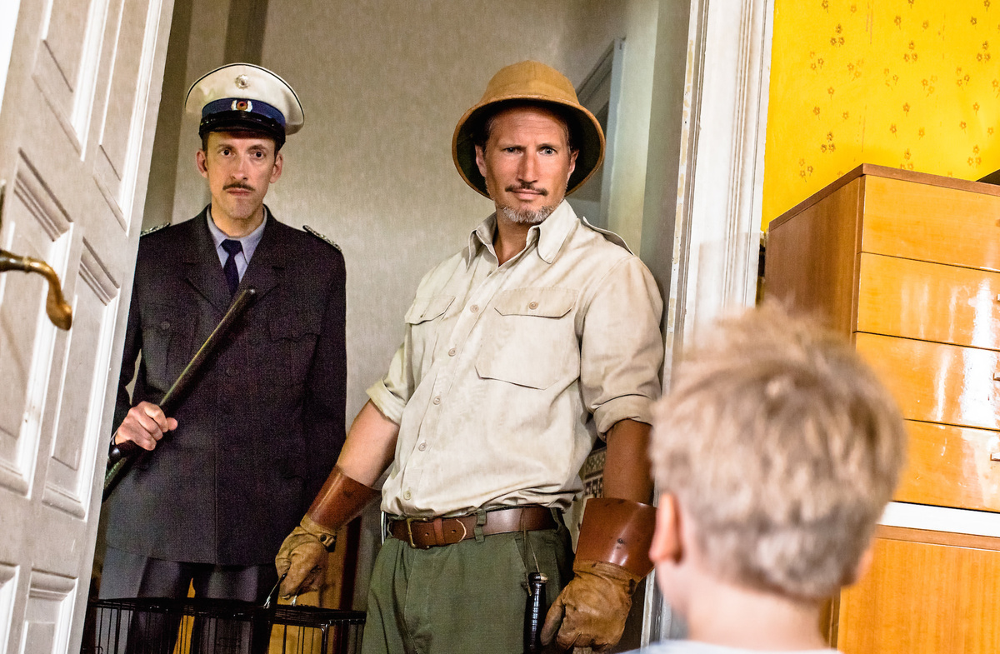
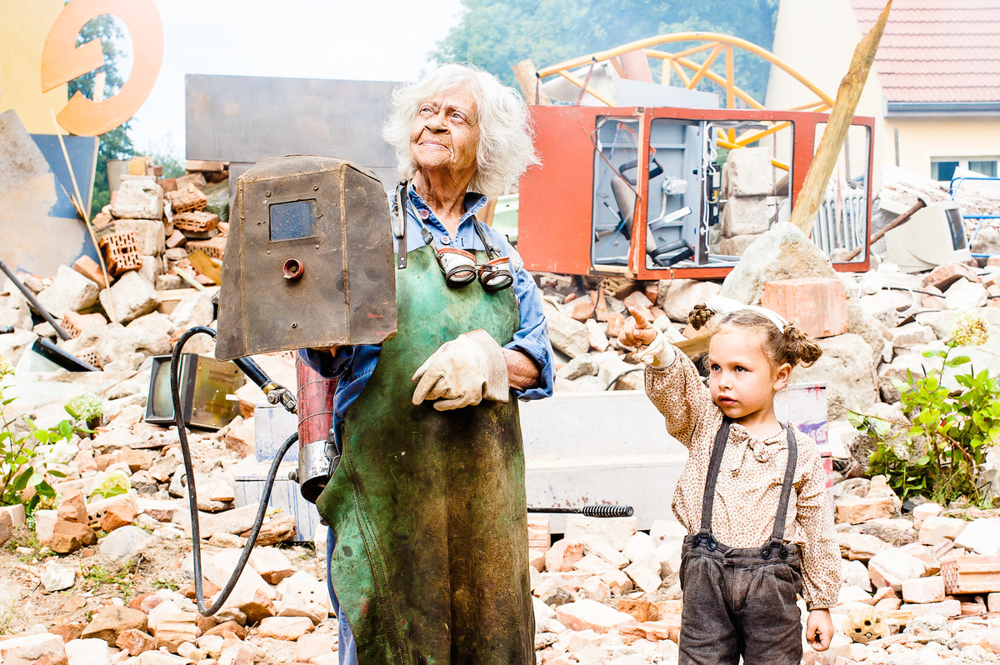
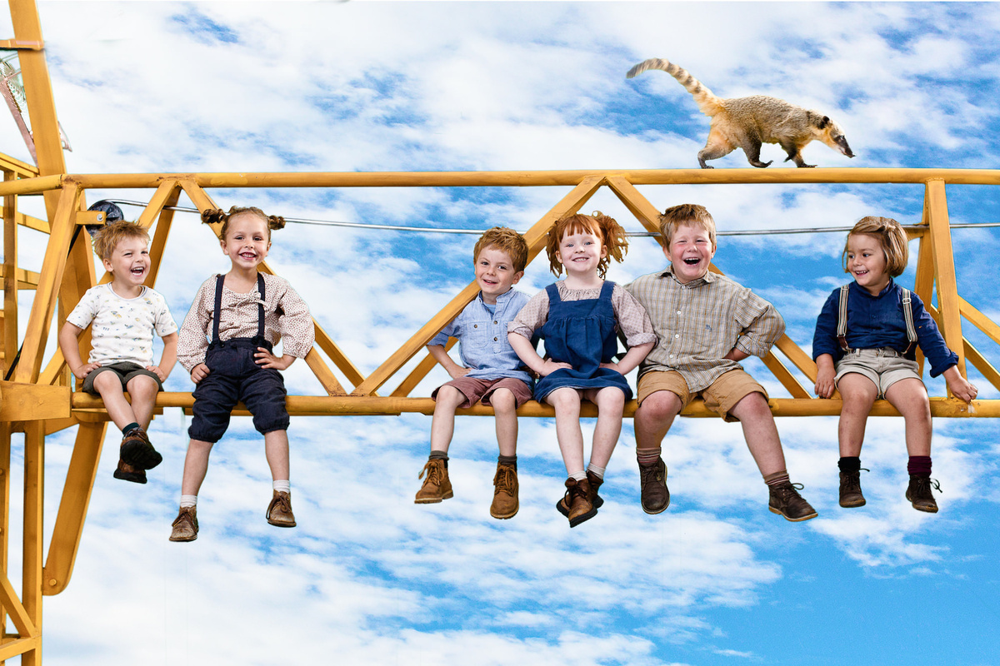

Forget Pippi Longstocking – here comes Bollersdorf!
Life for the children of Bollersdorf could be so wonderful if the village hadn't been discovered by the Society for Consumer Research because of its averageness. New products are to be tested here. What the people of Bollersdorf like can be sold well everywhere, the market researchers know. But while the parents of the village enthusiastically participate, their children quickly have their noses full of the annoying product testers. Especially when they want to send their beloved grandmas and grandpas to a retirement home so that the average age fits again. This is a case for the Coati Gang! Together with the clever coati Fiddlesticks, the children hatch a cunning plan: with adventurous inventions and crazy world records they want to prove Bollersdorf's uniqueness so that the consumer researchers finally disappear…



CAST Children
RIEKE Nora Börner
MAX Justin Wilke
LENE Charlotte Röbig
PAUL Pieter Dejan Budak
SUSE Henriette Kratochwil
BEN Mattis Mio Weise
CAST
GABY Fritzi Haberlandt
FRIEDA Vera Kluth
MARIANNE Nadeshda Brennicke
GERHARD Samuel Finzi
FRITZ Ulrich Voss SABINE Jule Böwe
ELKE Margarita Broich JÖRG Wolfram Koch
OTTO Fabian Busch
REMBERT Ulrich Krohm
ZOOKEEPER Benno Fürmann WORLD RECORD JUDGE Rolf Zacher
GKF MANAGER Alexander Scheer
CITY COUNCILOR Udo Schenk
CREW
DIRECTOR Veit Helmer
SCREENPLAY Hans-Ullrich Krause, Veit Helmer
CASTING Lisa Stutzky CHILDREN CASTING Jacqueline Rietz
CINEMATOGRAPHY Felix Leiberg
EDITING Vincent Assmann
SOUND Julian Cropp
MUSIC Cherilyn MacNeil, FM Einheit,
Ingfried Hoffmann,
Lars Löhn,
Malcolm Arison,
Pit Baumgartner,
Shantel
PRODUCTION DESIGN Anne Zentgraf
COSTUME DESIGN Mareike Bay
MAKEUP Daniela Blaschke
PRODUCER Veit Helmer
Fiddlesticks and the Coati Gang to
read & listen!
STRAWBERRY MILKSHAKE RECIPE
Fiddlesticks' favorite drink is strawberry milkshake. How he mixes the world's biggest one in the Bollersdorf swimming pool is something you simply have to see. He needs lots of cows, baskets full of strawberries, a windmill, a concrete mixer and very importantly: a slingshot. If you want to mix up the delicious strawberry milkshake yourself – here's the recipe (quantities per glass; if you want to fill a swimming pool, just take two million times the amount – should be about right).
Ingredients:
40g strawberries
200ml milk
½ tsp vanilla sugar
Clean the strawberries and cut them in half. Then put them in a blender together with the milk and sugar and blend until nice and frothy. Pour everything into your favorite cup – the milkshake is ready. Very important: sip slowly with a colorful straw!
THE ANIMAL TRAINER
Berlin-born Nicolle Müller is one of Germany's most renowned animal trainers. For over 15 years she has been preparing animals for film and television, including "Alarm für Cobra 11", "Hundkatzemaus", "Sperling", "Unser Charly" and many others. In the coaching documentary series "3 Engel für Tiere" (VOX) she appeared as an expert in front of the camera herself this year. In addition to the two FIDDLESTICKS coatis Elvis and Sunny, Müller is also "mama" to two pigs, a squirrel monkey and a cat.
How do you train coatis?
The coati is the South American relative of the raccoon and both species are remarkably clever, except that coatis have a much gentler nature. That's why they can be trained very well. They are also diurnal, which means that during filming – in line with animal welfare – we could maintain their normal life rhythm.
What else did you have to pay attention to so that the coatis wouldn't be harmed?
There are no real legal requirements, we act according to common sense and always for the welfare of the animals, because that ultimately benefits everyone. If an animal is overworked, it also harms the quality of the film. Generally speaking: the longer a shooting day lasts and the more stressful it is, the faster animals reach their natural limits and you have to wrap up. This also applies to coatis. During filming it was very hot, small children are also unpredictable for the animals. Add to that the fact that Fiddlesticks the coati is constantly crawling around on cranes and other vehicles, but I suffer from a fear of heights. And when I as the handler give off strange vibes, Elvis and Sunny's batteries run down faster too. That's why we had to adapt the shooting schedule closely to their needs, but that worked out great.
How long did you prepare Elvis and Sunny for the shoot?
About a year before it started. They could already do a lot before, but I naturally had to work with them towards the specific situations. Many people believe a trained animal automatically imitates everything you show it. But when does a coati ever play guitar and put its head to the mouthpiece of a trumpet? Or hold a drill and a grinder in its paws so it looks like it's working with them? That requires a lot of patience, but also looks much better in the film than if I had just improvised on set with things they could already do.
"An overall very successful, age-appropriate production with its very important message:
We all have our weaknesses, but above all strengths, the young as well as the old and even older.
Children need adults and adults benefit from the children's perspective." (from the German Film and Media Rating Board review)